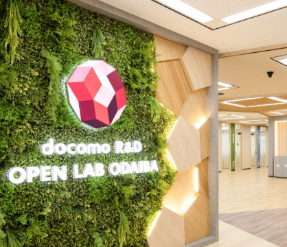

お知らせ
2024-09-10
公式サイトを公開しました。
OOCとは？
Object-Oriented Conference はオブジェクト指向をテーマに、アイデアを共有し、議論を深めることで、みなさんの知見を深めるためのイベントです。 オブジェクト指向といっても、分析設計から、現場で活かすためのプラクティスなど様々なテーマがあります。ソフトウェアの設計やプログラミングパラダイムの歴史について語るもよし、既存の設計手法に問題定義するのも、ネタに全振りするのもなんでもOK！です。参加者の皆様がそれぞれの新たな発見に出会えるようなイベントを目指しています。 オブジェクト指向についてまったく知らない方やオブジェクト指向を完全に理解した方、そして普段オブジェクト指向以外のパラダイムを利用している方もお気軽にご参加ください！
イベント
About
開催概要
イベント名
Object-Oriented Conference 2024
略称
OOC 2024
開催日時
2024年3月24日（日）11:00〜18:00
開催場所
お茶の水女子大学
参加対象
ソフトウェア設計やプログラミングパラダイムなどに興味をもつ方
主催者
OOC実行委員会
X（旧Twitter）
イベント
Eve
前夜祭

開催
2024年3月23日（土）18:00~20:00
会場
docomo R&D OPEN LAB ODAIBA
参加費
スピーカー・ゲスト：無料
一般参加者：2,000円
一般参加者：2,000円
アクセス
location_on
東京都港区台場２丁目3-2 台場フロンティアビル 12F
trainゆりかもめ「お台場海浜公園」駅より徒歩 1 分
りんかい線「東京テレポート」駅より徒歩 3 分
trainゆりかもめ「お台場海浜公園」駅より徒歩 1 分
りんかい線「東京テレポート」駅より徒歩 3 分
Sponsor
Object-Oriented Conference 2024
を応援してくださる企業様からの協賛を募集します。
各プランとも先着順で申し込みを受け付けます。
以下リンクより資料をご覧いただき、期限までにお申し込みください。
各プランとも先着順で申し込みを受け付けます。
以下リンクより資料をご覧いただき、期限までにお申し込みください。
（申込期限：2024年1月31日）